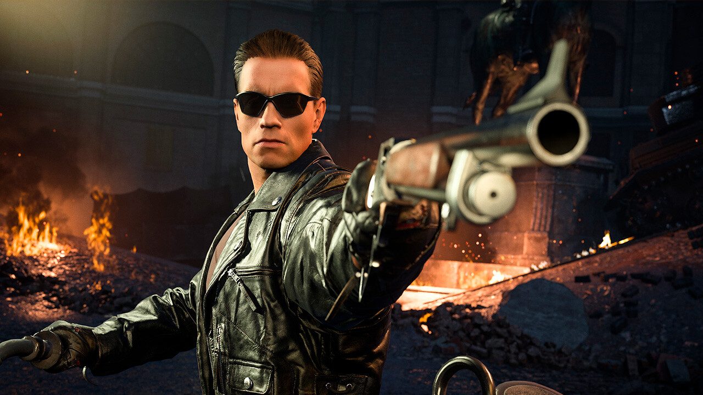

20 abril 2023
Assassin’s Creed Valhalla fue amado por muchos, pero para muchos tiene un problema enorme: dura mucho y parte de su contenido es poco satisfactorio. Es por esto que para Assassin’s Creed Mirage, Ubisoft decidió ir hacia otra dirección, ofreciendo una experiencia más encapsulada que será 3 veces más corta que Assassin’s Creed Valhalla.
Recientemente Julien Chièze, youtuber francés enfocado en gaming, tuvo una entrevista con Fabian Salomon, productor de Ubisoft (vía PCGamesN). En su conversación hablaron sobre Assassin’s Creed Mirage y la duración que tendrá este nuevo capítulo en la historia de la aclamada y famosa serie de Ubisoft.
En la plática, Salomon dejó en claro que Mirage será considerablemente más corto que Valhalla. Según pruebas internas, es posible terminar el juego en aproximadamente 20 horas. De hecho, quienes quieran completar el 100% podrán hacerlo en aproximadamente 30 horas.
“Las últimas pruebas de juego que hemos recibido tienen un promedio de entre 20 y 23 horas . Eso puede subir hasta 25 y 30 horas para quienes quieren completarlo y diremos que a quienes lo jueguen de forma apresurada les tomará aproximadamente 20 horas”, dijo el productor.

24 abril 2023
Hay buenas noticias para los fans de Terminator que se quedaron con las ganas de ver a Arnold Schwarzenegger como el icónico androide, puesto que una nueva colaboración lo hará posible.
Sabemos esto gracias a usuarios que encontraron en los archivos del juego el skin o atuendo Terminator, con la apariencia del actor y exgobernador de California Arnold Schwarzenegger, tal como puede verse en Terminator 2.
Por lo visto, Epic Games prepara un conjunto inspirado en la película de 1991 Terminantor 2: El juicio final.
Hasta el momento, Epic Games no ha hablado sobre una nueva colaboración con Terminator, pero de ser verídica, este paquete, llamado Future War, debería estar disponible en algún punto de la Temporada 3 del Capítulo 4, que está en curso, de acuerdo con los detalles que encontraron los usuarios Barbieharp y FNBRintel (vía ShiinaBR y RoEssYT).
